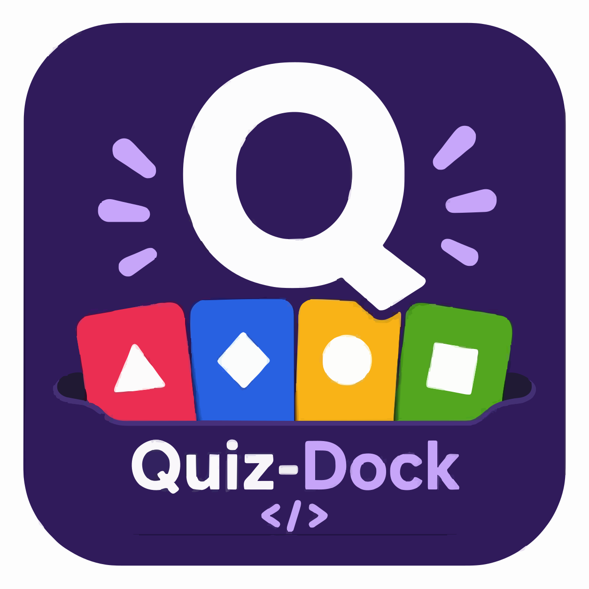

⚡
Real-time multiplayer
Socket.IO game engine with authoritative server timing. Players join a session by 6-digit PIN or QR code — from a handful to a few hundred.

Open source · self-hosted · pre-1.0QuizDock is an open-source, self-hosted live quiz platform with bright, projector-ready screens. Players join by PIN or QR with no account, and your data never leaves your servers.
From the quiz builder to the projector, the leaderboard and the data export.
Socket.IO game engine with authoritative server timing. Players join a session by 6-digit PIN or QR code — from a handful to a few hundred.
Every player gets a unique, generated Multiavatar avatar — no upload, no account, instant identity on the leaderboard.
Bright, high-contrast light screens designed for the big screen. Separate projection and control windows, full-screen lobby, question, leaderboard and podium.
Seven question types — single/multi choice, true-false, text, numeric, reorder and poll — with image & audio media and reusable quizzes.
Time-weighted points with streak bonuses, a leaderboard between questions and a final podium. Manual or automatic pacing, pause & resume.
Optionally record every player's individual answers — for audit, certification or individual follow-up. Players are told when a session is recorded.
Browse archived sessions: per-question success rates, average times, and drill down into each player's score, streak and answer sheet.
Export overall session results and per-player answer sheets to CSV — ready for your spreadsheets, gradebooks or reporting.
Interface available in English, French, Spanish and Simplified Chinese. One language per instance, set in your configuration.
Runs entirely on your own infrastructure with Docker. No SaaS, no third party, no ads. Players need no account; hosts can plug in OIDC when needed.
Rebrand the name, logo and CSS through an env var and a mounted folder — no rebuild. Make every instance look like yours.
One image on Docker Hub —
fchaussin/quizdock
(multi-arch amd64/arm64). Pull it and bring the stack up.
docker pull fchaussin/quizdock:latest
curl -O https://raw.githubusercontent.com/quizdock/quiz-dock/main/docker-compose.prod.yml
docker compose -f docker-compose.prod.yml up -d
# then open the app in your browser
open http://localhost:18080
Prefer building from source? git clone the repo and run the same compose with
--build. Rebrand and pick a language without rebuilding via
APP_NAME / APP_LANG and a mounted branding/ folder.
Build a quiz, hit present — QuizDock locks a server-side snapshot and shows a PIN.
No account, no install. They pick a nickname and they are in the lobby instantly.
Answer in real time, crown the podium, then explore results and export to CSV.
Pull the image or clone the repo, star it, and run it where your data belongs.